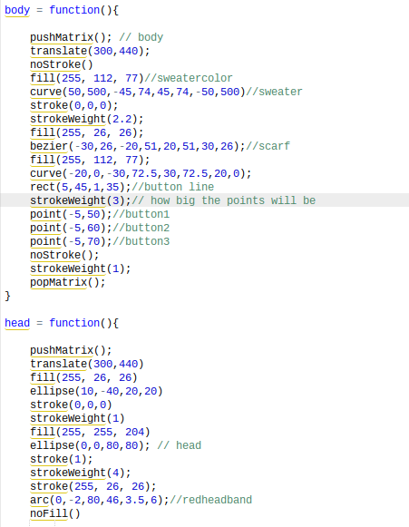
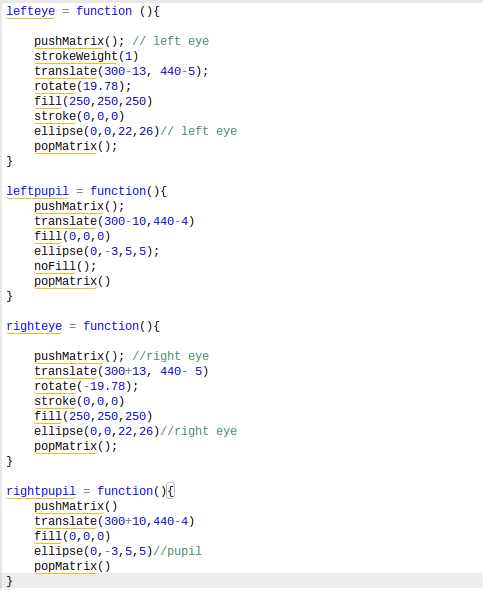
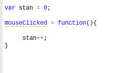
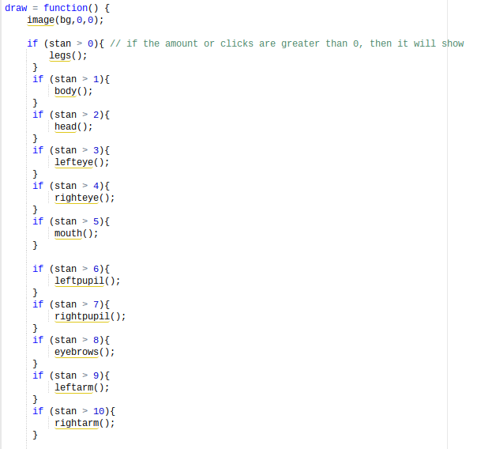
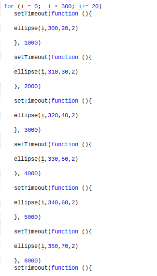

This project required each student to create art using shapes as well as functions, conditions, loops, and a way to interact. So for my project, I decided
to draw a character from one of my all time favorite shows: Stan Marsh from South Park. I had to do a lot of drawing but I was finally able to come up with
something that I really liked. I created stan marsh. And in order for him to appear, the user must click on the canvas. He starts appearing a piece at a
time. Each click brings out a part of his body.
For this project, I created many functions. At first, I just wanted to create stan. I wanted to create him then be able to interact with him someway. But I thought
that it would be really cool if I could click him on to the map kind of like in the intro of South Park where pieces of him come together. So to do this, I would
have to seperate the body, from the legs and the eyes, from the head and so on. So to break them up, I created a function for each of them.

As you can see in my code, I have a lot of pushMatrix() and popMatrix(). The pushMatrix() saves the current coordinate system while the popMatrix restores the
original coordinate system. I had to use this element in my function because I used the rotate() element. The rotate element shifted the matrix at the point of
origin which made it difficult to add anything else because then it would be rotated like everything else. I also used a lot of translate(). This element would
change the origin to wherever I wanted it to be so I changed it to (300,440) so it looks like my character is standin on the side walk. The rest of the functions
are really just rectangles, triangles, ellipses, and curves put in a manner that makes a drawing of Stan Marsh.
For this project, I only had one way for the user to interact. The way that the user would interact is by clicking on the canvas. clicking on the canvas would make
a piece of stan appear until he is complete. To do this, I first created a variable called stan and make stan = 0. After creating my variable, I said that if the
mouse is clicked, then add 1 to stan. Now that I have my numbers, I could create my drawing by saying, if stan > 0 then draw the legs. One initial problem I had was
I said if stan = 1 then draw the legs. This way didnt work because once stan was not = 0 then the legs would go behind the background making it look invisible.


For this project, I didnt really want to use a loop but since I had to, I used the "for" loop. The way that I used a for loop is that I created an ellipse under the for
loop and added a setTimeout function. The for loop I created the variable i to make things easier for me. I wanted to make it look so that the flashing ellipses are on top
of stan and the i+=20 made it so. I made this so it would kind of make it look like an alien was placing him there or something. The for loop would draw the circle over
and over again while the setTimeout would wait one second before drawing the next set of circles.
